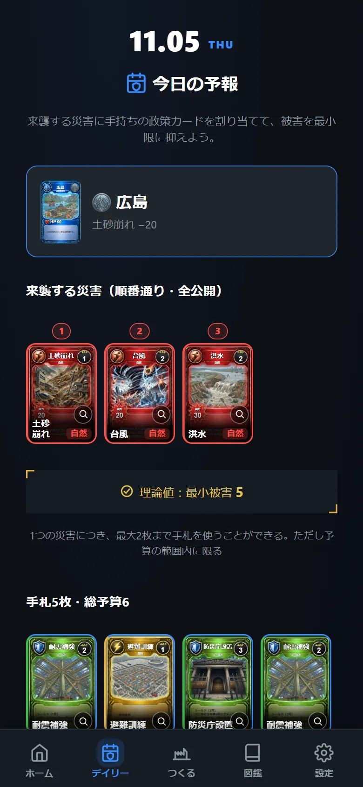
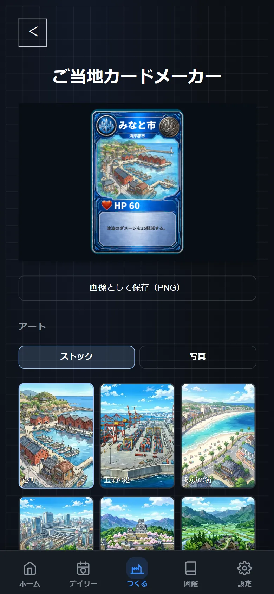
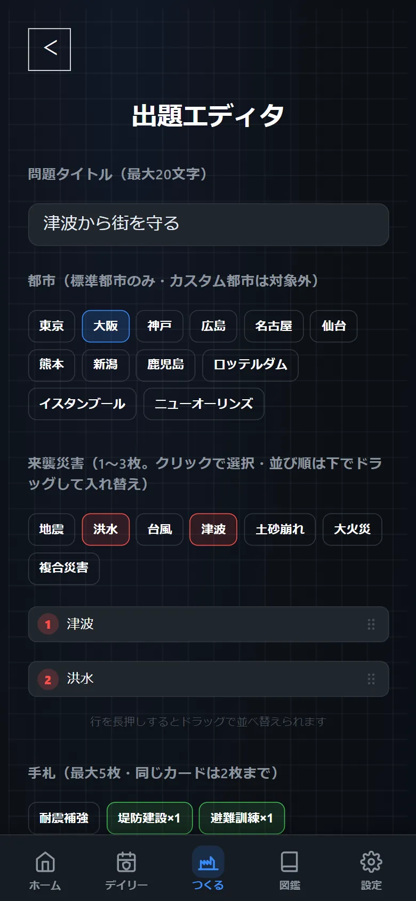
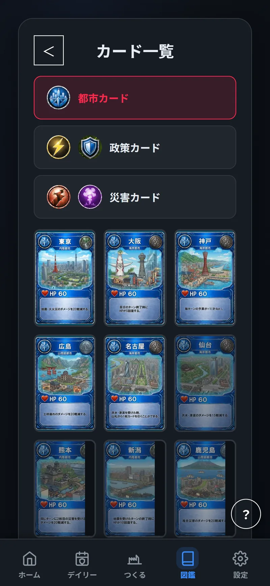

防災カードバトル
―防災カードバトル―
ABOUT
避難の仕方は、学校で習う。でも本番は一度きりで、練習ができない。
Ready or Not は、そのすき間を埋めるカードゲーム。街を守る役になって、限られたお金で備えを選ぶ。結果は数分でわかり、失敗しても何度でもやり直せる。
今夜、置けるのは1枚
シンプル・王道カードバトル
1人CPU / 2人
激動のサバイバル
3人〜5人
対戦・協力の先にある、やり込み要素
1日1回、2分で解ける1問。最善の手を探そう。

自分の街のカードを作れる。共有コードで友だちにも。

災害・手札・予算を決めて、詰め防災の問題を出題できる。

集めたカードと都市を、いつでも見返せる。

失敗できる災害はここだけ